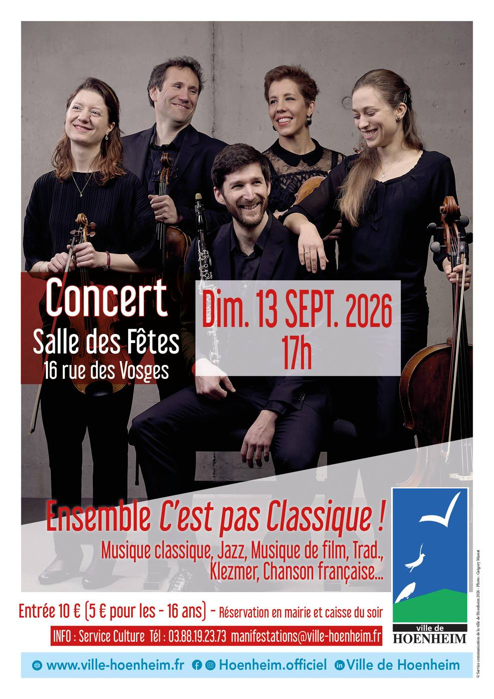

Concert de l’ensemble C’est pas Classique !
13 septembre à 17 h 00 min - 19 h 00 min
Navigation de l'événement

Dans le cadre des rendez-vous musique et culture la ville de Hoenheim vous propose un concert de l’ensemble C’est pas Classique !, le dimanche 13 septembre 2026 à 17h à la salle des fêtes 16 rue des Vosges à Hoenheim.
Le concept “C’est pas Classique!”
L’ensemble “C’est pas Classique!” vous propose un concept original de concert en deux temps: une première partie pour découvrir des chefs-d’oeuvre de la musique classique, composés pour ensemble de chambre, et expliqués avec simplicité et humour par les musiciens eux-mêmes avant de les interpréter. Puis une deuxième partie plus légère, où se côtoient musique de films célèbres, musique traditionnelle, standard de jazz, chanson française… Le tout arrangé spécialement par les artistes de l’ensemble!
Un moment convivial, faisant dialoguer diverses cultures.
Le programme
Le programme de cette année s’articulera autour du quintette pour clarinette et quatuor à cordes de Wolfgang Amadeus Mozart, composé en 1789. Ce chef-d’oeuvre du répertoire éblouit par sa beauté, son élégance, l’équilibre parfait des voix. La non moins célèbre “Petite musique de nuit” du même auteur et jouée par le quatuor à cordes introduira le concert.
Les musiciens poursuivront avec une pièce de musique klezmer, ou musique traditionnelle juive, qui mettra en valeur la virtuosité du clarinettiste. Puis viendront un standard de jazz, un arrangement d’une chanson française bien connue, une pièce traditionnelle des Balkans, un tango de Carlos Gardel et un hommage à Lalo Schifrin, compositeur de musiques de films dont le fameux Mission impossible. Bref, il y en aura pour tous les goûts !
L’ensemble
L’ensemble “C’est pas Classique!” né en 2024 est constitué de musiciens passionnés et avides de faire découvrir avec simplicité et bonne humeur l’incroyable répertoire de musique de chambre, tout en faisant dialoguer d’autres styles de musique, pour le plus grand plaisir du public. Les artistes, issus de l’Orchestre Philharmonique de Strasbourg, du Conservatoire à Rayonnement Régional de Strasbourg ou de l’orchestre Collegium Musicum de Bâle, se réunissent plusieurs fois dans l’année pour des concerts dans toute l’Alsace et au-delà.
Lorenzo Salvá Peralta – clarinette
Thomas Gauthier, Clara Ahsbahs – violon
Émile Jouette – alto
Marie Viard – violoncelle et référente de l’ensemble
Tarif : 10 € / 5 € pour les moins de 16 ans
Prévente des billets en Mairie de Hoenheim auprès du Service Animation 03 88 19 23 73 ou manifestations@ville-hoenheim.fr.
Une caisse du soir sera également ouverte dès 16h30, dans la limite des places disponibles.